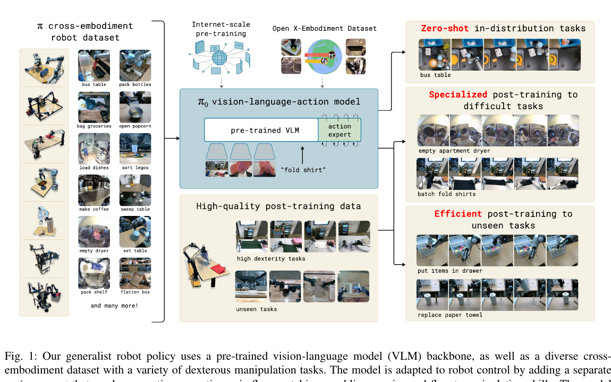

π0
A Vision-Language-Action Flow Model for General Robot Control.
π0는 사전학습 VLM의 의미 이해력에 별도 action expert를 결합하고, flow matching으로 연속 행동을 생성하는 generalist robot policy다. RT-2류의 이산 action-token VLA가 정교한 조작과 고주파 제어에서 만나는 한계를, continuous action chunk로 풀려는 것이 논문의 중심이다.
Problem
π0가 풀고 싶은 문제
로봇 정책은 보통 새 작업과 새 로봇마다 많은 demonstration을 다시 모아야 하고, 작은 환경 변화나 실패 뒤의 복구에도 약하다. π0는 다양한 물리 경험을 축적한 하나의 policy가 이 비용과 취약성을 줄일 수 있는지 묻는다.
로봇 데이터 부족
실제 robot demonstration은 비싸고 느리다. π0는 여러 로봇과 작업의 데이터를 함께 pre-training해, 새 작업에 필요한 data를 줄이려 한다.
낯선 상황에서의 일반화와 복구
물체 위치·배경·실패 방식이 달라지는 실제 환경에서는 깨끗한 expert trajectory만으로 학습한 policy가 쉽게 무너진다. 다양한 pre-training data는 폭넓은 상황과 recovery behavior를 제공한다.
정교한 연속 조작
빨래 접기와 박스 조립처럼 deformable object와 양팔 coordination이 필요한 작업은 고주파의 정밀한 제어를 요구한다. π0는 continuous action chunk를 생성해 이 문제를 다룬다.
Thesis
범용성은 넓은 경험에서, 정교함은 고품질 post-training에서
π0는 하나의 모델을 많은 로봇·작업·환경에 먼저 노출한 뒤, 특정 작업에는 더 작고 품질 높은 데이터로 post-training해야 한다고 주장한다. 넓은 pre-training은 낯선 상황과 recovery를, post-training은 매끄럽고 정확한 행동 전략을 제공한다.
Pre-trained VLM
웹 규모 image-text 사전학습에서 얻은 물체·언어·장면의 semantic knowledge를 로봇 제어의 출발점으로 사용한다.
Action expert with flow matching
VLM의 language token 출력만으로 행동을 표현하지 않고, 별도 expert가 연속 action chunk를 flow matching으로 생성한다.
Cross-embodiment pre-training
single-arm, dual-arm, mobile manipulator의 데이터와 OXE 데이터를 결합해 범용 physical prior를 만든다.
Overview
π0의 학습 레시피

Diverse pre-training mixture
자체 dexterous manipulation data와 OXE·Bridge·DROID 같은 공개 데이터를 함께 사용한다. 목적은 한 작업을 완벽히 외우는 것이 아니라 넓은 물리 경험을 학습하는 것이다.
Prompting or post-training
base π0는 언어 prompt만으로 일부 작업을 직접 수행할 수 있고, 더 긴·정교한 작업은 고품질 demonstration으로 post-training한다.
Model Architecture
VLM은 이해하고, action expert는 움직인다
π0는 PaliGemma 3B를 VLM backbone으로 사용한다. 이미지와 언어는 backbone이 처리하고, 로봇 상태와 noisy action chunk는 새로 추가한 action expert가 처리한다. 두 부분은 self-attention을 통해 서로 정보를 주고받지만, 각자 다른 종류의 입력과 출력을 전문적으로 다룬다.
Observation
입력은 여러 RGB camera image, 언어 지시, proprioceptive state다. π0는 한 번에 미래 50-step action chunk를 예측한다.
Two experts in one Transformer
image와 language token은 PaliGemma backbone으로, robot state와 action token은 약 300M parameter action expert로 route된다. 전체 모델은 약 3.3B parameter다.
Why separate action expert?
VLM은 discrete language를 잘 생성하지만, robot control은 빠르고 정밀한 연속값을 요구한다. action expert는 이 motor-control 문제를 별도로 학습한다.
Flow Matching
왜 action을 token으로 나누지 않는가?
π0는 행동의 각 dimension을 이산 bin으로 예측하는 대신, noise에서 목표 action chunk로 가는 vector field를 학습한다. 이렇게 하면 high-frequency·continuous control을 더 자연스럽게 모델링할 수 있다.
Noisy action path
정답 action (A_t)와 Gaussian noise (epsilon)을 섞어 flow matching의 입력 action을 만든다.
Learned vector field
모델은 observation과 noisy action을 보고, noise를 실제 행동으로 옮길 방향을 예측한다. 추론에서는 이 과정을 10 step 적분한다.
Data & Training
10,000시간의 pre-training, 작업별 post-training
π0의 pre-training mixture는 자체 7개 로봇 구성·68개 작업의 dexterous data와 공개 데이터를 포함하며, 전체 약 10,000시간 규모다. 이후 작업 난이도에 따라 약 5시간에서 100시간 이상의 task-specific data로 post-training한다.
Pre-training learns coverage and recovery
다양한 물체·장면·행동 전략과 recovery 사례를 통해, 정확한 expert trajectory만으로는 얻기 어려운 대응 범위를 배운다.
Post-training learns fluent execution
고품질 data는 빨래 접기, 박스 조립처럼 긴 작업에서 원하는 전략과 motion quality를 모델에 정렬한다.
Results & Takeaway
π0가 보여준 것
Base model의 직접 실행
셔츠 접기, 테이블 정리, 장보기 물품 담기, 토스트 꺼내기 같은 작업에서 사전학습 π0가 OpenVLA·Octo·VLM 없는 baseline보다 강한 성능을 보인다.
새 dexterous task로의 효율적 적응
수건 접기, 그릇 쌓기, 전자레인지에 용기 넣기 같은 작업에서 pre-training 초기값이 특히 적은 data 조건에서 도움이 된다.
가장 중요한 메시지
범용 로봇 정책은 큰 데이터만으로 완성되지 않는다. 넓은 pre-training과 정교한 post-training을 분리하고, 연속 motor control에 맞는 action generator를 설계해야 한다.
원문: π0: A Vision-Language-Action Flow Model for General Robot Control ↗